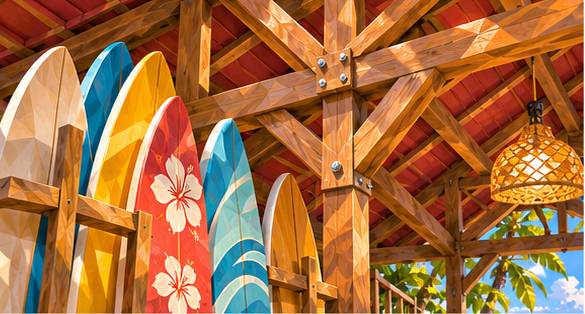

箭头从原场景的起始机位指向观察目标。图格以项目坐标为单位，可用于同机位比较。参考图各自的镜头按图中内容估计。
现有项目观察目标 XYZ (-10, 1.18, -0.95) 现有项目起始机位 XYZ (-3.8, 9, 6.8) 从入口定通道和主要家具，近景落实板架、冲浪板支撑和屋架，按现有出入口对接沙地。 图片角度是风格与结构参考。精确几何、地面标高和尺寸采用项目原模型与地形函数。 现有项目 src 下的对应实现 environment.ts、camera.ts（shop） 店铺基点 XYZ=(-10, 0.68, -1)，地板宽 7.5、深 5.6。店面正面与服务侧有真实开口。
验收 从入口走到板架再回到海滩，检查门洞、板架净空及冲浪板与支架的接触。